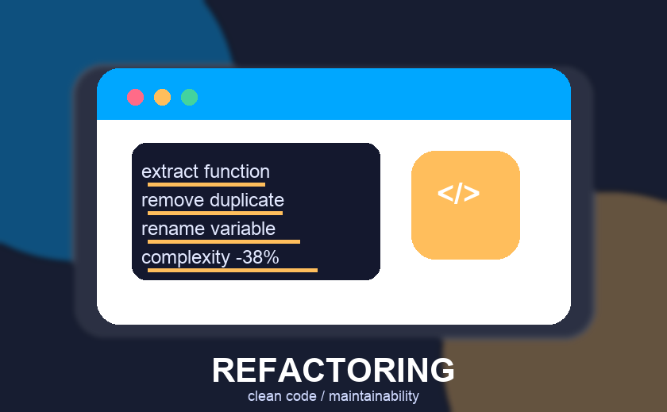

איך בונים ארכיטקטורת קוד נקייה שמחזיקה לאורך זמן
ארכיטקטורת קוד טובה מפרידה בין לוגיקה עסקית, תשתיות וממשקי משתמש. כשהגבולות ברורים, קל יותר להוסיף פיצ'רים, לתקן באגים ולשמור על מוצר יציב גם כשהמערכת גדלה.
קרא עוד
פיתוח API יציב: חוזים ברורים, תגובות מהירות ואינטגרציות קלות
API איכותי מתחיל במבנה נתונים צפוי, שמות עקביים וטיפול נכון בשגיאות. תכנון מוקדם של הרשאות, גרסאות ותיעוד מקצר את זמן הפיתוח ומונע תקלות בין צוותים.
קרא עוד
רכיבי Frontend חכמים שמאיצים בניית ממשקים
ספריית רכיבים מסודרת הופכת עיצוב לקוד שימושי, נגיש ועקבי. כשכל כפתור, טופס וכרטיס בנויים נכון, הצוות יכול לבנות מסכים חדשים מהר יותר בלי לוותר על איכות.
קרא עוד
בדיקות אוטומטיות שמאפשרות לשחרר קוד בביטחון
בדיקות יחידה, אינטגרציה ו־E2E מגנות על תהליכים קריטיים ומגלות בעיות לפני הלקוח. כיסוי נכון לא נועד לבדוק כל שורה, אלא להבטיח שהמוצר ממשיך לעבוד כשמוסיפים קוד חדש.
קרא עוד
אופטימיזציית ביצועים בקוד: פחות עומס, יותר מהירות
ביצועים טובים מתחילים במדידה: זמני טעינה, גודל חבילות, שאילתות איטיות וזיכרון. אחרי שמזהים את צוואר הבקבוק, אפשר לשפר קאשינג, טעינה עצלה ויעילות אלגוריתמית בצורה מדויקת.
קרא עוד
אבטחת קוד כבר משלב הפיתוח: ולידציה, הרשאות וסודות
קוד מאובטח לא מתחיל בסוף הפרויקט. הוא מתחיל בבדיקת קלט, ניהול הרשאות, שמירה נכונה של מפתחות וסריקה רציפה של תלותים כדי לצמצם סיכונים לפני שהם מגיעים לפרודקשן.
קרא עוד
DevOps לפרויקטי קוד: CI/CD, בדיקות ופריסה חלקה
תהליך פריסה טוב מחבר בין Git, בדיקות, בנייה וסביבות ענן. כשהצינור אוטומטי וברור, אפשר לשחרר גרסאות קטנות בתדירות גבוהה ולזהות תקלות במהירות.
קרא עוד
ריפקטורינג נכון: להפוך קוד מסובך לקוד שקל לעבוד איתו
ריפקטורינג מוצלח משפר שמות, מפרק פונקציות גדולות ומסיר כפילויות בלי לשנות התנהגות. כשעושים אותו בשלבים קטנים ומגובים בבדיקות, הקוד הופך ברור יותר והתחזוקה זולה יותר.
קרא עוד